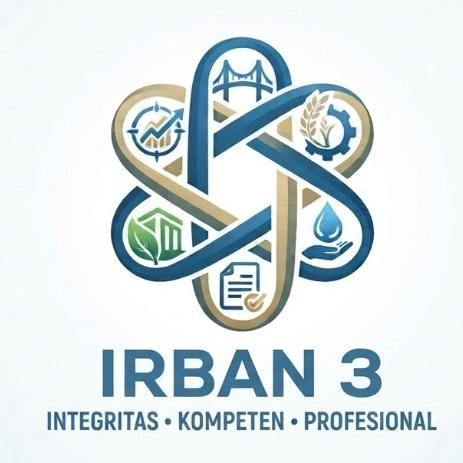

SIBATIGIrban Tiga
← Kembali ke halaman masuk
Lupa kata sandi?
Jangan khawatir. Masukkan email terdaftar dan kami akan mengirimkan tautan untuk mengatur ulang kata sandi.
?
Tidak dapat mengakses email?Hubungi administrator SIBATIG untuk verifikasi akun.
Periksa email Anda
Kami telah mengirimkan tautan pemulihan ke . Tautan berlaku selama 30 menit.